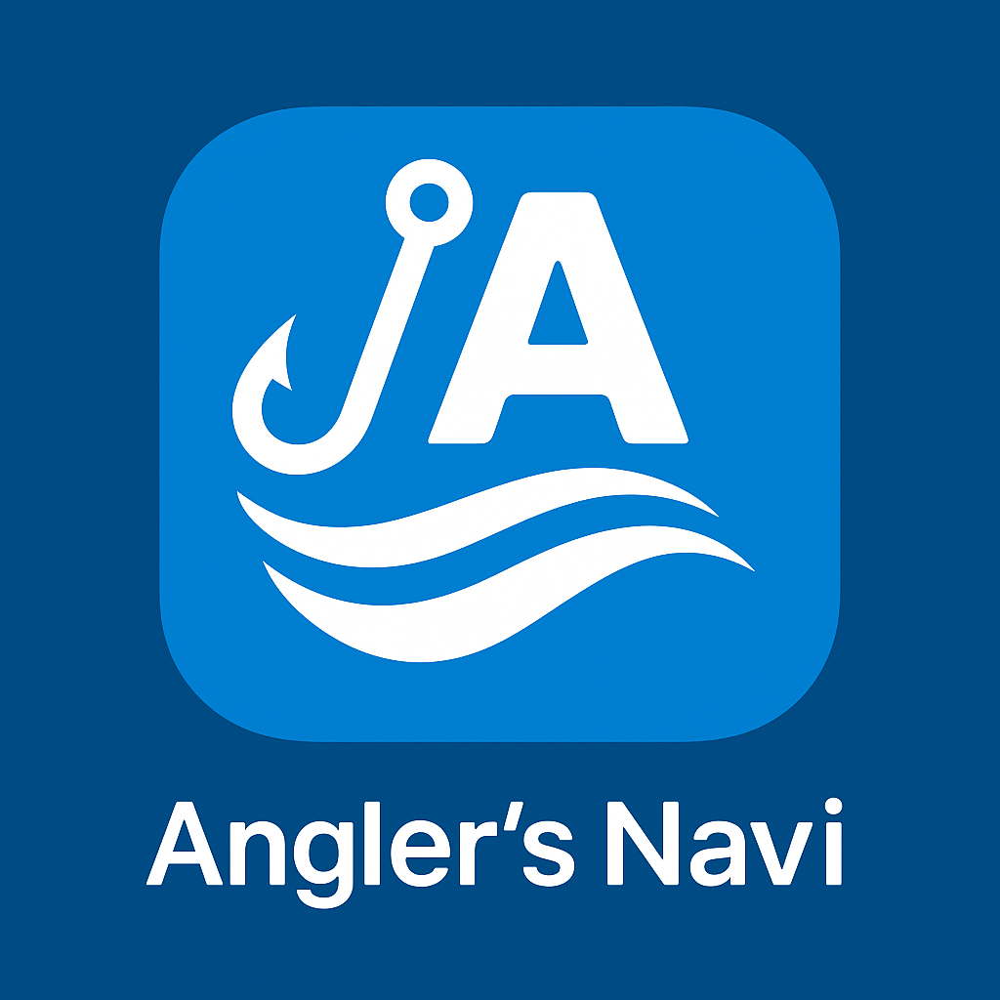

 Angler's Navi
☰
ホーム
Angler's Naviとは
天気検索
お問い合わせ
釣り人による釣り人のための天気予報アプリ
天気を検索する
今後のアップデート予定
より詳細な地点（漁港・離島など）を指定できるよう改善予定
風向・潮汐・満潮・干潮などをより見やすい形式に再設計予定
地図上で釣り場を表示し、地点をクリックして天気情報を取得できる機能を検討中
ユーザー登録や「お気に入り釣り場」の保存機能も今後の構想に